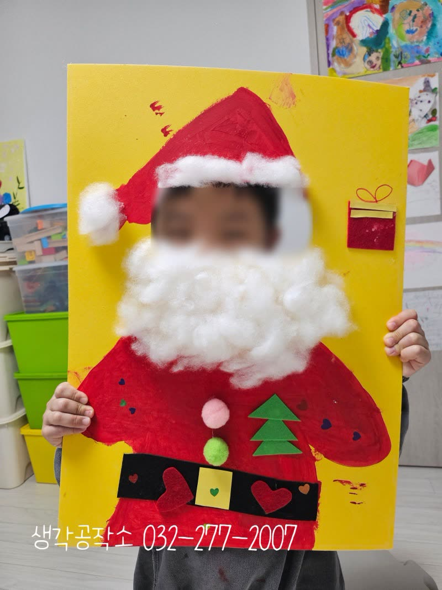
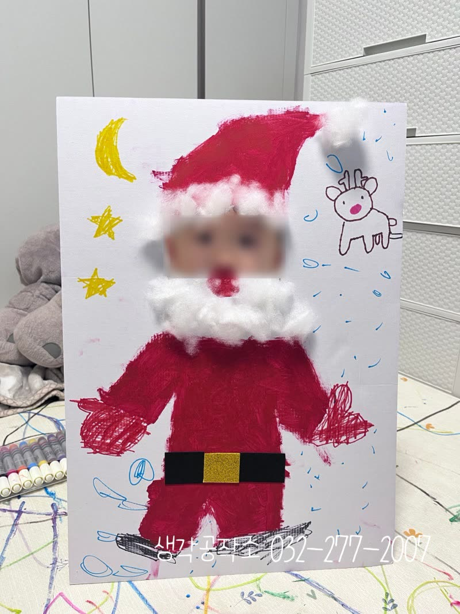
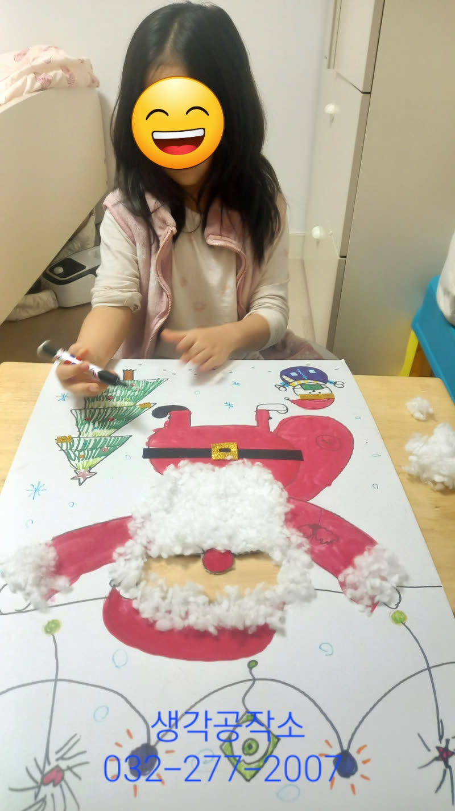
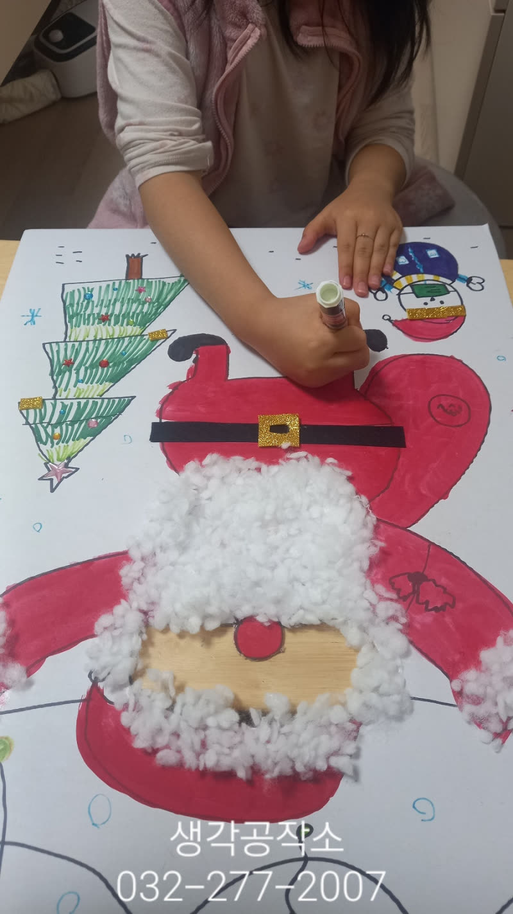
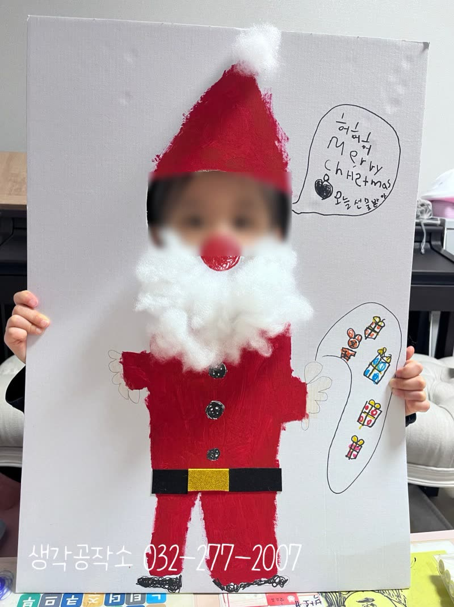
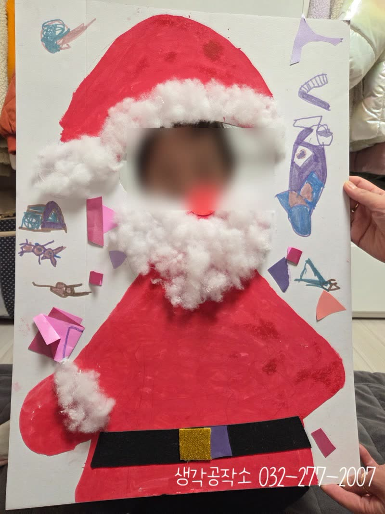
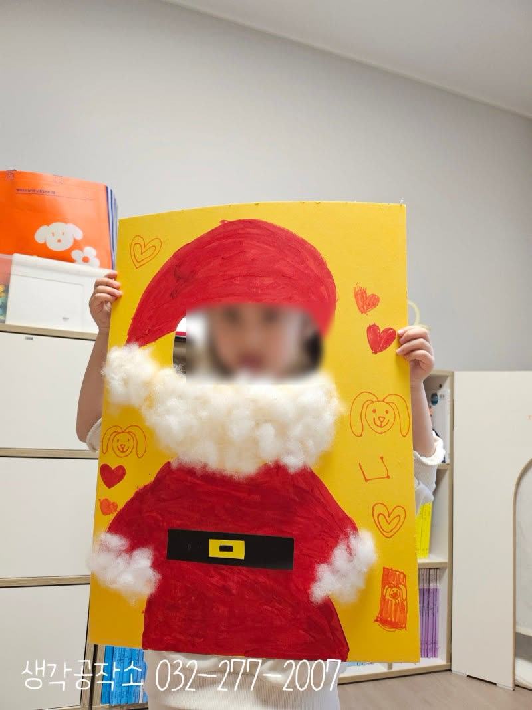
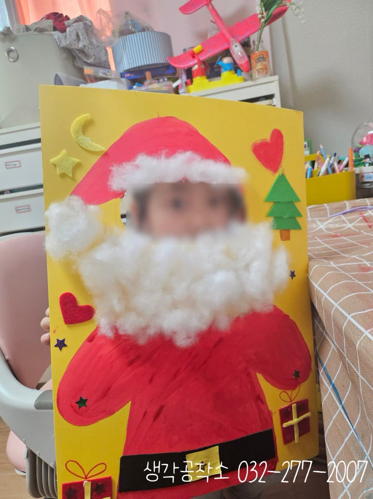

"저 산타할아버지에요!" 아이들이 직접 만든 산타 되어보기 🎅
안녕하세요, 생각공작소입니다. :)
12월, 크리스마스를 앞둔 설레는 시간에 진행했던!
특별한 미술 활동을 소개합니다. 🎄
바로 나도 산타할아버지! 🎅✨
빨간 옷과 하얀 수염의 산타할아버지가 되어보며
크리스마스의 의미를 생각해보는 시간이었답니다.


"산타할아버지 만난 적 있어?"
"어떤 선물을 받고 싶어?"
선생님과 함께 크리스마스 이야기를 나누며 🎄
아이들의 상상력이 펼쳐지기 시작했어요.
"저는 착한 아이가 될 거예요!"
"친구들한테 친절하게 할래요!"
"엄마 아빠 말씀 잘 들을 거예요!"
산타할아버지를 만들며 스스로를 돌아보고 다짐하는 시간,
아이들의 진지한 목소리가 들려왔답니다. 🌟


먼저 도화지 위에 큰 산타할아버지를 그려주었어요.
빨간 물감으로 산타할아버지의 옷을
칠하기 시작했습니다.🎅🏻
"선생님, 빨간색 정말 예뻐요!"
"제가 꼼꼼하게 칠할게요!"
붓으로 넓은 면을 채워가는 아이들.
물감이 번지지 않도록 조심조심,
선 안쪽을 꼼꼼하게 밝은 빨간색을 칠하며
무척 즐거워하는 아이들의 표정이 햇살처럼 환했어요. ☀️


산타 옷에는 반짝이는 황금 벨트를 붙이고,
크리스마스트리와 선물 상자도 함께 꾸며주었어요.
"이 선물 상자 안에 뭐가 들어있을까?"
"저는 로봇이요!" "저는 인형 받고 싶어요!"
선물 상자를 상상하며
아이들의 눈빛이 더욱 반짝였답니다. 🎁
그리고 가장 특별한 순간!
부드러운 솜을 듬뿍 붙여
산타할아버지의 하얀 수염을 만들었어요.


솜을 만지며 느껴지는 부드러운 촉감,
하나하나 정성껏 붙이는 아이들의 손길.
모자 끝에도, 옷 끝에도 따뜻한 솜을 붙이니
정말 산타할아버지가 완성되었습니다! ⛄
"선생님, 다 됐어요!"
완성된 작품 뒤에 얼굴을 넣고
진짜 산타할아버지가 된 아이들!
"저 산타할아버지예요!" "호호호~!"
환하게 웃으며 자랑하는 모습에서
자신감과 성취감이 가득 느껴졌답니다. 😊
이번 산타할아버지 만들기 활동은
단순히 그림을 그리는 것을 넘어,
크리스마스의 의미를 생각하고,
스스로를 돌아보며 다짐하고,
물감 칠하며 집중력을 키우고,
솜의 촉감을 느끼며 오감을 발달시키고,
완성된 작품을 통해 자신감을 얻는
모든 순간이 아이들의 성장이었답니다. 🎄
오감 쑥쑥! 생각 쑥쑥!
📞 생각공작소 032-277-2007